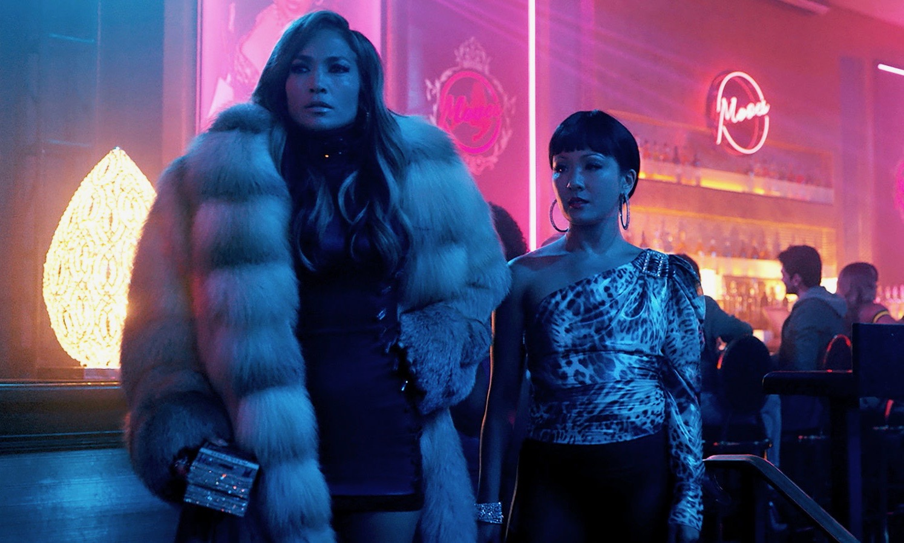
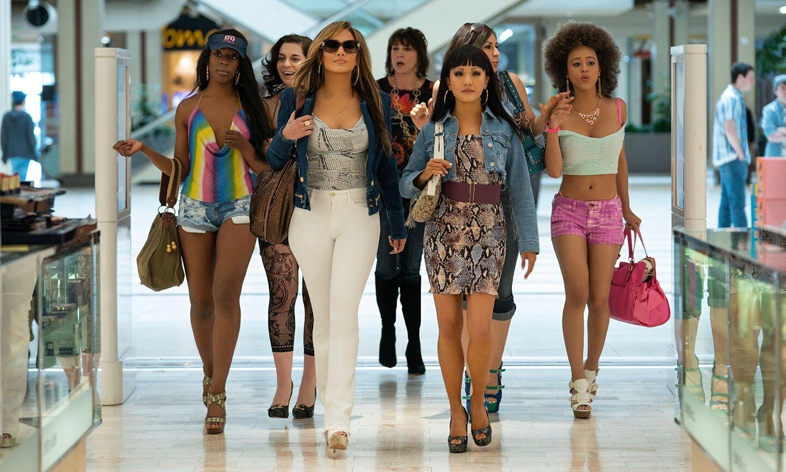
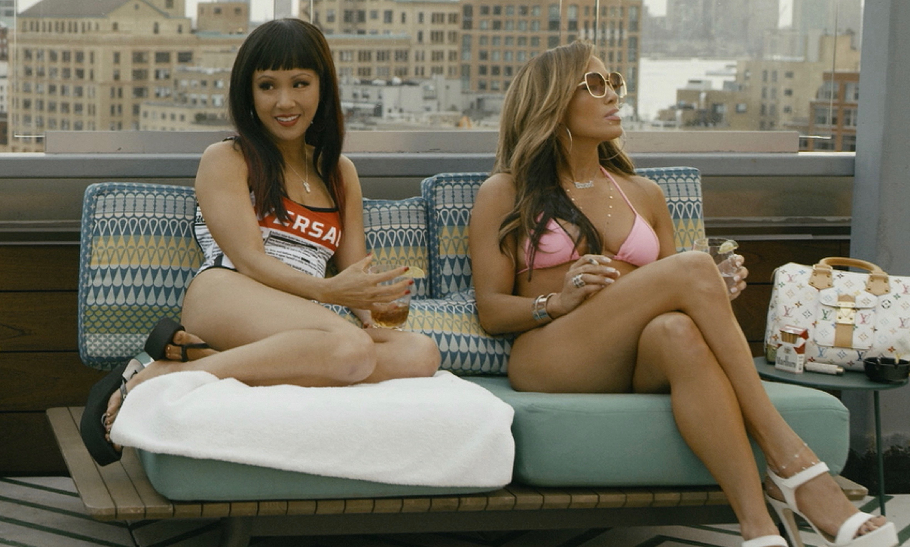
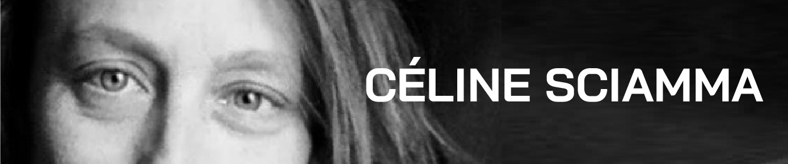
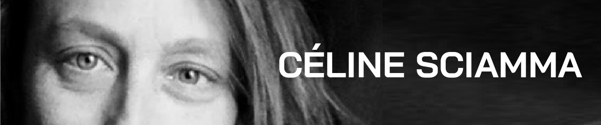

When Hustlers premiered at the Toronto International Film Festival in September, much of the buzz for the film centered on Jennifer Lopez, who gives a transfixing, undeniably megawatt performance. Her stripper-grifter with a heart of, if not gold, at least bronze, is the film’s most dazzling component, so much so that some Oscar forecasters have seeded her as a shoo-in for a supporting actress nomination. Which would be a coup, for both the Lopez legacy and the movie, a commercial success made by women and released in the not terribly Oscar-friendly wilds of mid-September.
Jennifer Lopez and Constance Wu in "Hustlers."
If Lopez is the film’s best chance for awards recognition, so be it. She’d be a shining emblem for a movie that earned a good deal of money on a relatively small budget, and that speaks to current economic turmoil without being preachy or tedious. A win—or just a nomination—for Lopez would be a win for Hustlers at large. She’d be the movie’s surrogate, as so often happens at the Oscars with films starring women. (See: Still Alice, Loving, 45 Years, etc.) But I think there’s a bigger case to be made for the movie’s awards worthiness when it comes to the film’s writer-director, Lorene Scafaria.
There are a few different ways to assess Scafaria’s stellar work on Hustlers. The first is to just watch the film and appreciate its formal graces. Scafaria, working with cinematographer Todd Banhazl, stages the film—about New York City strippers navigating the late-aughts financial crash by drugging and robbing Wall Street clients—with frenetic but controlled energy. Hustlers has a marvelous sense of motion to it, rollicking us along while occasionally stopping for some contemplative, poignant, or otherwise lovely moment. It’s a dexterously crafted film, stylish without smothering its substance, archness and sincerity commingling.
One could also admire Hustlers as a career milestone. Hustlers marks an exciting evolution for Scafaria, who previously made the wistful dramedies Seeking a Friend for the End of the World and The Meddler, the latter a terrific character study that saw Susan Sarandon doing her best work in maybe 20 years. Strong as those films were, they were aesthetically more modest, more straightforward. What Hustlers does instead is show us yet another facet of Scafaria’s talent, eye-poppingly demonstrating that she can deftly handle narrative loops and kinetic visuals as well as anyone.
Hustlers is a wonderful showcase for her writing as well. Adapted from a New York magazine article written by Jessica Pressler, Hustlers has to survey a scam and articulate it while also locating the human element crucial to our connection to the story. Scafaria handles that tricky project beautifully; Hustlers is funny and suspenseful, warm and wise. It’s a clever movie, one that can operate as pure criminal entertainment for those that want it, but that has depth worth mining as well. It prods at a good deal of American reality, connecting the gaze of patriarchy to the function of money in bracing ways. Hustlers has a merry verve but it’s also a piercing look at the scramble for solvency in a time of middle-class erosion.
The cast of "Hustlers" on set.
That’s all stuff I love about Hustlers, and stuff I think Scafaria deserves accolades for. Then there’s the fact that it’s a small miracle the movie got made at all. Scafaria shot the film over 29 crammed days this past spring. She then hurried to get the film ready for an early-fall release, with a stopover in Toronto. She filmed in New York City, working with a big and starry cast, for just $20 million. That there was a film to be screened in Toronto is a feat. That it’s also one brimming with wit and finesse is a real triumph.
I know that sounds grandiose, and that $20 million is a fortune for indie filmmakers. Scafaria was not toiling away in the salt mines. But Hustlers is scrappy for a large, commercial release, which counts for something, as does its hefty profit. That’s an accomplishment the industry, and Academy voters, should appreciate. Think about all the crowing there was about the hardship of making The Revenant when that film was on its awards hunt.
Sure, the Hustlers cast wasn’t eating bison liver in the snow, nor did Scafaria have to wrangle a legion of extras to stage a battle sequence. But! There was still a degree of difficulty in Hustlers’ execution—those dance scenes alone!—that I think might be more considered, more respected even, were the movie made by a man. And, maybe, were it not a film about strippers, one of whom is played by Jennifer Lopez. The movie, and Scafaria, have to conquer some prejudices to earn the esteem they deserve.
Jennifer Lopez and Constance Wu in "Hustlers."
It’s probably a total pie-in-the-sky fantasy that Scafaria would ever get recognized by top-tier awards-voting bodies for a film like this. But I’m placing some hope in the fact that the Academy has a new shape, particularly the directors branch. Those ranks have diversified, so we might start seeing some interesting, unexpected choices. Just last year, Polish filmmaker Pawel Pawlikowski scored a best director nomination for his Cannes darling Cold War. If that’s a sign that this wing of the Academy is thinking more critically and broadly, then who knows what surprises may be in the offing.
Could Scafaria be in that mix? She’s made a populist hit with an actual message, putting together a killer ensemble piece while still giving one industry stalwart the role of her later career. Maybe there’s some dim glimmer of a chance that enough wild voters in the Academy will see the merit in rewarding all of that. Then again, Marielle Heller couldn’t get in for last year’s Can You Ever Forgive Me?, which was arguably more of a Respectable Indie. They’re different movies, but both are about women running cons in a city that seems either indifferent or hostile to their existence. Maybe Heller’s omission indicates that, though new members have been brought in, the Academy still thinks a certain way about movies made by the likes of Heller and Scafaria.
But hey, if for no other reason, the Academy should vote for Scafaria because wouldn’t it be fun to have all that Hustlers energy at a staid awards show? The cast might turn up for Lopez, but it’s easier to imagine them all arrayed—Cardi B, Constance Wu, Lizzo, Keke “Sorry to This Man” Palmer, Riverdale’s own Lili Reinhart—to support their fearless leader. Those are optics the Academy should aspire to. And the best way to achieve that would be to honor the woman who assembled them all in the first place.


 
